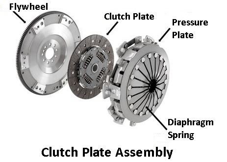
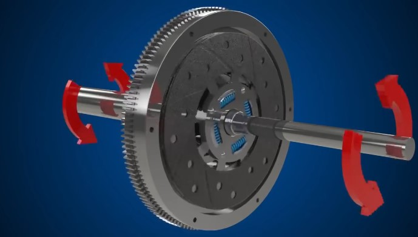
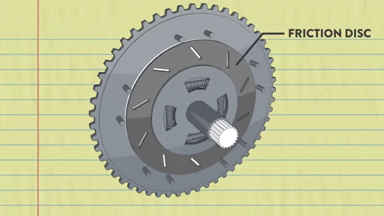
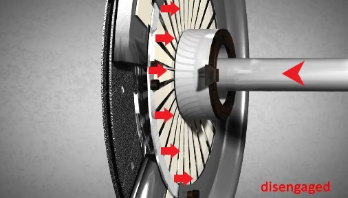
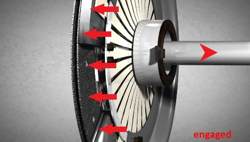
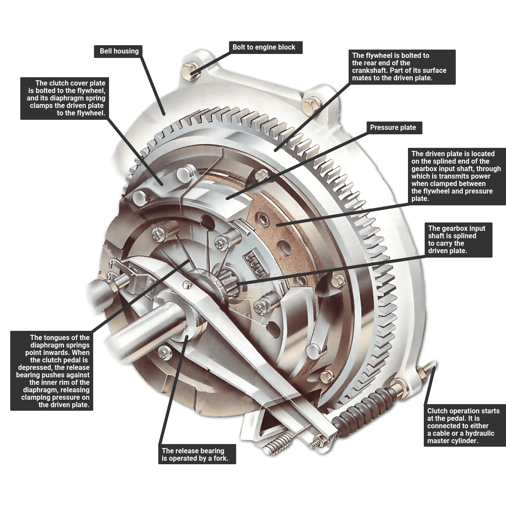

CLUTCH
Ever worndered what happens to the car when you press the clutch pedal and why are we using it ?
Here's the answer:
Before starting about clutch we should understand the engine.
A clutch is like a switch to alter the power transmission from Engine to the transmission body.
To change a gear with transmission we have to stop the power supply from the engine clutch is used for this purpose.
The Basic parts of clutch are:

- Clutch Disc/Plate
- Pressure Plate
- Diaphram Spring
The diaphram spring and pressure plate are attached to clutch disc and the shaft connecting transmission is connected to the clutch setup.
There are friction surfaces on flywheel and clutch disc.
Now for simplicity lets only consider only the flywheel and clutch disc now the flywheel and clutch disc rotate due to friction when connected.


Now the mechanism to disconnect and connect the clutch disc to the flywheel is done by pressure plate and diaphram spring.
The working of a diaphram spring is
basically if we press in a particular direction in the middile/inner portion of the disc, the outer portion of the disc moves opposite to the direction the force applied.

and the pressure plate is for maintaining the pressure
so that the cluch can retract to normal i.e clutch disc connected to the flywheel once we lift the clutch.

Now the working Part:
When we press the clutch it presses the diaphram spring in the middle so that the clutch disc and flywheel
are disconnected and pressure builds up in the pressure disc
And after we change the gear once we lift of the clutch pedal the disc again connects to the flywheel heng rotating in the speed of the flywheel.
When we change gear while moving the clutch disc and flywheel will be would be rotating at different speeds hence when we again connect the clutch disc with the flywheel there would be heat proced due to the slipping
of the disc for a short time until the discs attain same speed to decrese those shocks springs are attached to the
clutch disc to dampen shocks.How it the clutch looks practically